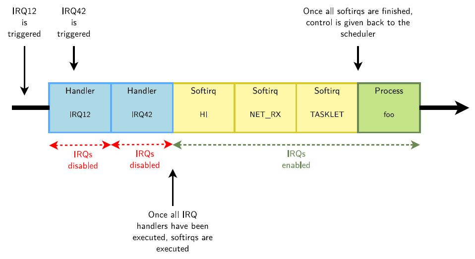

 1.硬中断首先执行，期间中断被禁止。
2.然后中断使能，软中断执行。
软中断有优先级，数量固定，可被硬中断打断嵌套，但不可被软中断打断，在软中断被全部处理后之前进程不会被调度。
在SMP中，软中断是谁触发，谁执行，因此多个softirq可以并行执行，甚至同一个softirq可以在多个processor上同时执行。
Linux内核最多可以支持32个softirq，但当前只实现了10个。 软中断定义在include/linux/interrupt.h，包括HI, TIMER, NET_TX, NET_RX, BLOCK, BLOCK_IOPOLL, TASKLET,SCHED, HRTIMER, RCU。
Tasklet在HI和TASKLET两个软中断中被调用。
Workques是延迟处理的另一种机制，运行在内核线程，处理实时性比软件中断更低的操作。
硬中断在Linux中被称为Top Haf, 软中断、Tasklet和Workque被称为Bottom Haf.
并发处理的目的是解决资源被多个使用者同时使用的冲突。
并发根据系统复杂度分为以下几级：
单CPU不可剥夺式内核
内核线程处理HW_IRQ_Concurrency和SW IRQ Concurrency的访问冲突。
软中断处理HW_IRQ_Concurrency的访问冲突。
单CPU可剥夺式内核
在上述基础增加：
多CPU（SMP）
在上述基础增加：
为方便移植与统一，内核API不分系统复杂度，而是本身根据配置情况进行适配。API使用者根据以下使用场景决定选择何种API。
用于互斥访问，但效率远高于互斥锁。（锁中不能睡眠）
自旋锁与互斥锁有点类似，只是自旋锁不会引起调用者睡眠，如果自旋锁已经被别的执行单元保持，调用者就一直循环在那里看是否该自旋锁的保持者已经释放了锁，"自旋"一词就是因此而得名。
它把对共享资源的访问者划分成读者和写者，允许同时有多个读者来访问共享资源。
写者是排他性的，一个读写锁同时只能有一个写者或多个读者（与CPU数相关），但不能同时既有读者又有写者。
通过在读完成后再进行一次确认/重试来实现读的无阻塞和正确性。
共享资源结构体中不能含有指针(读取失效指针时可能发生系统崩溃);

主要用于实现计数。
原子操作依赖硬件功能保障”读-修改-写“的过程（比如递增指令）是独占的。 比如CPU对总结进行加锁。
保护读多写少的基于指针访问的链表的数据结构。

读不需要获得任何锁，但读期间上下文将不能切换；
通过拷贝-修改-更新指针完成修改。
在修改之前所有读操作完成(即宽限期或grace time）之后删除旧结构体。
软件中断可以使用以上API，并有如下扩展：
内核线程除可以使用以上API，但需要注意以下事项：
RCU 读操作需要在spinlock的保护下，确保进程不被调度。RCU回写回调函数不能睡眠。
自旋锁有以下扩展,以支持需要防止软中断抢占的情况：
Reader/Writer Spinlocks同样，也有对应扩展。
另外内核线程在对锁性能要求不高的情况下，应尽量使用以下通过进程调度使用锁机制的API，以减少对系统的影响：
 互斥锁主要用于实现内核中的互斥访问功能。
互斥锁主要用于实现内核中的互斥访问功能。
相对互斥锁，信号量允许资源被多个用户计数访问的情况。
读写信号量对访问者进行了细分，或者为读者，或者为写者。写者独占临界区，排斥其他的写者和读者，而读者只排斥写者。
信号以一个数字表示，类似中断号，通过内核在进程间进行传递，当进程收到信号时如同发生中断似的运行信号对应的处理函数。
每个进程在内核层都有一个signal位图。当进程用户态每次从内核返回或被内核调度运行前，内核检查signal位图，并直接将待执行的signal处理函数push到进程堆栈中以使进入用户态后首先信号处理函数被首先运行。

dentry通过双向链表描述文件的树型结构。

管道是由内核管理的一个环形缓冲区。
当管道中没有信息的话，从管道中读取的进程会等待，直到另一端的进程放入信息。
当管道被放满信息的时候，尝试放入信息的进程会堵塞，直到另一端的进程取出信息。
当两个进程都终结的时候，管道也自动消失。
)
基于嵌入式Linux系统分析，描述linux的时间计算方法。
hrtimer机制

时钟源设备（clock-source device）
在 Linux 中不同的时钟源有不同的 rating，具有更高 rating 的时钟源会优先被系统使用。时钟事件设备（clock-event device）
系统中可以触发 one-shot（单次）或者周期性中断的设备都可以作为时钟事件设备。Periodic tick
Tick device 用来处理周期性的 tick event。全局的 tick device 用来更新诸如 jiffies 这样的全局信息，per-CPU 的 tick device 则用来更新每个 CPU 相关的特定信息。Dynamic tick（部分系统使用来取代Periodic tick）
为了能在系统空闲时通过停止 tick 的运行以达到降低 CPU 功耗的目的。使用 dynamic tick 的系统，只有在有实际工作时才会产生 tick，否则 tick 是处于停止状态。
dynamic tick 可以随时停止和开始，以不规律的速度产生 tick，因此支持 one-shot 模式的时钟事件设备是必须的；由于 hrtimer 采用事件机制驱动 timer 前进，因此使用 one-shot 的触发模式也是顺理成章的。Timekeeping & GTOD (Generic Time-of-Day) Timekeeping，更新系统时间，维持系统“心跳”。GTOD 用来实现诸如设置系统时间 gettimeofday 或者修改系统时间 settimeofday 等工作。
内核定时使用:
1.通过传统的时间轮机制：

- Timer wheel 提供了 5 个 timer 数组，数组之间存在着类似时分秒的进位关系。
- TV1 为第一个 timer 数组，其中存放着从 timer_jiffies（当前到期的 jiffies）到 timer_jiffies + 255 共 256 个 tick 对应的 timer list。
- TV2 有 64 个单元，每个单元都对应着 256 个 tick，因此 TV2 所表示的超时时间范围从 timer_jiffies + 256 到 timer_jiffies + 256 * 64 – 1。依次类推 TV3，TV4，TV5。
- base->timer_jiffies 用来记录在 TV1 中最接近超时的 tick 的位置。index 是用来遍历 TV1 的索引。每一次循环 index 会定位一个当前待处理的 tick，并处理这个 tick 下所有超时的 timer。
2.使用hrtimer机制
使用红黑树的链表结构在每次Jiffy中断时查找超时的Timer进行处理。